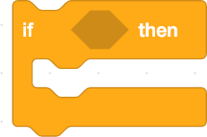
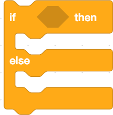

Condition
When programming, conditions allow the program to work in the desired manner when the conditions are met. The conditions are either met (true) or not met (false). Something happens if the condition is met. In other words, conditions can be used to branch out the execution of the program. One can also put conditions into each other and thus make more complex branches. Scratch contains many different opportunities to create conditions. Blocks that begin with the word "if" or if they contain the word "until" are conditions.
Examples of conditions in Scratch
This block in the Control Blocks drives the blocks it contains if the condition is met.
This block in the Control Blocks drives the blocks it contains if the condition is met. If not, run the blocks that contain "else".
